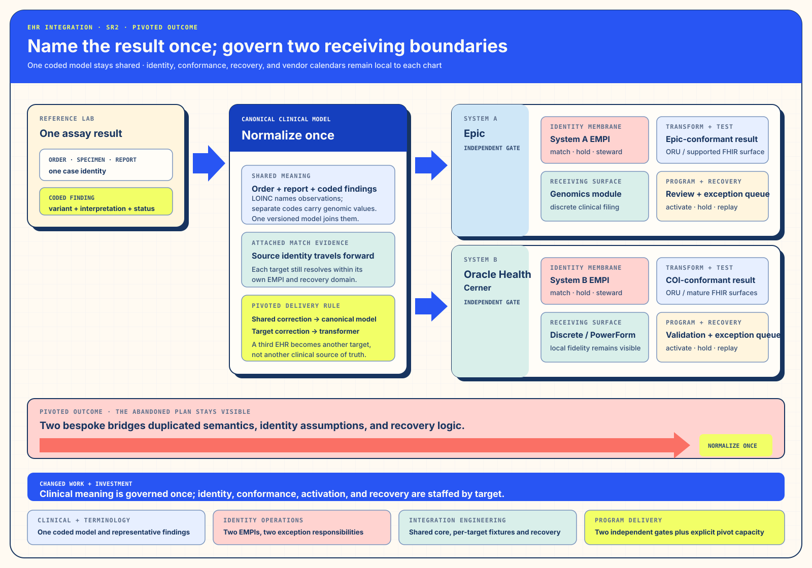

Track ISolution Architecture · Purpose and Changed WorkName the result once; preserve two receiving truths.
I. Solution Architecture — Name the result once; govern two receiving boundaries
§a Debrief — One Clinical Truth, Two Receiving Grammars
The laboratory produced one assay and one variant set, while each health system carried that result through its own clinical vocabulary, identity domain, deployment process, and receiving workflow. Epic could receive a discrete genomic result through its established integration path. Oracle Health could receive the same clinical meaning through its own interface and discrete-result conventions. Building each path independently would have turned one clinical promise into two sources of drift.
The more durable object was neither vendor implementation. It was the canonical result: patient identity, order, report, coded finding, interpretation, and status expressed once before either target shaped it.
§b The Bottleneck — Divergent Landings, Identity Domains, and Calendars
§c The Intervention — A Canonical Model with Per-Target Contracts
The team pivoted from two bespoke bridges to one normalizing interface-engine boundary. Laboratory output entered a canonical representation with coded findings and an explicit identity reference. From there, separate transformers produced an Epic-conformant result and an Oracle Health-conformant result. Each target retained its own match policy, conformance fixtures, deployment calendar, and recovery queue.


§d The Outcome — The Bespoke Plan Gave Way to a Reusable Backbone
The outcome is intentionally recorded as pivoted. The initial two-bridge direction was retired once the second identity domain exposed how quickly duplicated mappings and recovery logic would diverge. The revised shape required a changed delivery sequence, yet it produced the more valuable asset: a shared clinical model that could support later receiving systems while preserving the meaning of the result.
§e Repeatability — Normalize Once, Emit N Times
Treat the canonical representation as a maintained product. Give every target its own transformer, identity rule, conformance suite, release gate, and recovery route. A new EHR then extends the receiving portfolio instead of multiplying the clinical source of truth.